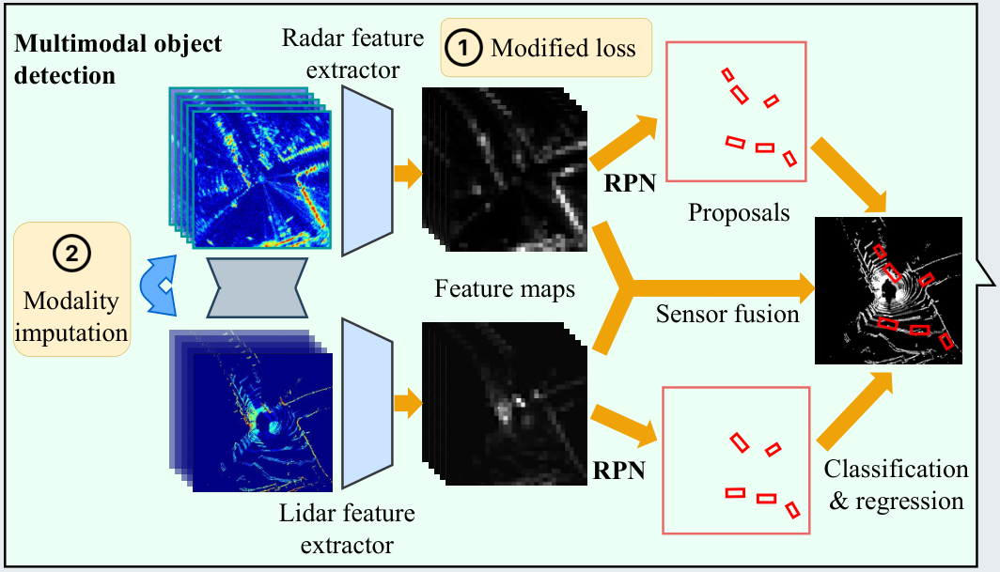

AutoFed
Presented by [@Albert2718](https://github.com/Albert2718)
Autonomous Driving¶
Autonomous driving (AD) is rapidly advancing and expected to improve safety, traffic efficiency, and environmental impact. A core requirement of AD is reliable perception— detecting vehicles, pedestrians, signs, and obstacles under diverse road and weather conditions.
Modern AVs rely on multiple onboard sensors:
- Camera – rich appearance, sensitive to weather
- LiDAR – accurate geometry, limited by distance/adverse weather
- Radar – long range, robust to fog/rain, low resolution
Multimodal sensing → complementary, real-time perception
Multimodal Object Detection¶
Deep learning–based object detection integrates these sensors to achieve accurate perception. Most systems follow a two-stage pipeline:
- generate region proposals
- classify objects & regress bounding boxes
Many works show that multimodal fusion significantly improves robustness for autonomous driving.
To simplify view alignment across modalities, many AV systems operate in bird’s-eye view (BEV) representations.
The Need for Distributed Training¶
Ideally, object detection models should be trained on data covering all road types, traffic patterns, and weather conditions.
However:
- Driving environments change constantly
- It is impossible to collect a globally complete dataset
Crowdsensing via large fleets of AVs is a natural solution,
but traditional crowdsensing raises issues:
- privacy concerns
- communication overhead
- data sharing restrictions
Federated Learning for Autonomous Driving¶
Federated Learning (FL) addresses these limitations:
- Each AV performs local training
- Only model updates (not raw data) are uploaded
- A central server coordinates global aggregation
FL enables privacy-preserving, scalable training across massive AV fleets,
providing a practical way to leverage diverse, real-world driving data without centralized storage.
Challenge: FL for Multimodal OD is Hard¶
While FL works well for simple tasks (e.g., classification), FL for multimodal object detection (OD) is substantially more challenging:
- OD models are large and complex, with chaotic loss surfaces
- AV-collected data exhibit strong heterogeneity in:
- annotations
- sensing modalities
- environments
These issues may destabilize FL aggregation and seriously degrade model performance.
AutoFed aims to address these challenges for robust federated multimodal OD.
1. Label Heterogeneity¶
Different AVs provide inconsistent or wrong labels.
- Missing objects → false negatives
- Wrong boxes → polluted gradients
- Inconsistent criteria → instability in FL aggregation
Backpropagating wrong gradients harms the global model!!!

2. Modality Heterogeneity¶
Not all vehicles have the same sensors.
- Some have LiDAR + Camera
- Some have Radar only
- Some have missing or malfunctioning sensing channels
This creates incomplete feature spaces among clients.

3. Environment Heterogeneity¶
Training data come from diverse scenes.
- Urban vs suburban
- Day vs night
- Weather conditions
- Traffic density differences
This leads to diverged model updates, causing slow or unstable convergence.

Label Heterogeneity Solution¶
Modified Cross-Entropy (MCE)¶
Standard BCE:¶
Modified CE:¶
Adjusts gradient with a threshold \(p_{th}\) to reduce the influence of mislabeled samples.
Wrong labels will not dominate training anymore.
Standard BCE¶
Binary Cross-Entropy (BCE) is a commonly used loss function for binary classification. It measures the discrepancy between the predicted probability \(p\) and the ground-truth label \(y \in \{0,1\}\).
Definition:¶
- If the true label is 1, BCE penalizes the model when \(p\) is too small.
- If the true label is 0, BCE penalizes the model when \(p\) is too large.
Purpose:¶
- Produces small loss when predictions are close to the truth
- Produces large loss when predictions deviate significantly
- Widely used for the classification branch in object detection
Modified Cross-Entropy (MCE)¶
How to determine \(p_{th}\)?¶
The answer is Hyper-parameter Evaluation

Modality Heterogeneity Solution¶
Autoencoder-based Modality Completion¶
Goal:¶
To leverage the valuable information in the heterogeneous sensing modalities, we propose to fill in the missing data by leveragingthe relations among different modalities.
Architecture:¶
- Encoder: 4 conv layers
- Decoder: 4 deconv layers
- Skip-connections: preserve structure
- Activation: ReLU / Sigmoid
Modality Heterogeneity Solution¶
Feature-Level Fusion with Cross-Attention¶
Each modality learns from the other modality.
Given feature maps \(z_s\) and \(z_{\bar{s}}\) (where \(s \in \{\text{lidar}, \text{radar}\}\)):
Query from current modality \(q_s = W_q z_s + b_q\)
Key/Value from complementary modality：
$$k_s = W_k z_{\bar{s}} + b_k$$
$$v_s = W_v z_{\bar{s}} + b_v$$
Cross-Attention Output¶
Attention weight: $$ \alpha_s = \text{softmax}\left(\frac{1}{\sqrt{d_k}} q_s k_s^T\right) $$
Enhanced feature: $$ z'_s = \alpha_s \, v_s $$
Each modality asks the other modality for useful cues.
Autoencoder-based Modality Completion¶

Environment Heterogeneity¶
KD-Tree Based Client Selection¶
Why?¶
Environment heterogeneity causes divergent updates.
Idea:¶
Use PCA + KD-tree to measure client similarity.
Server selects the most aligned clients for aggregation.
Benefit:¶
- More stable global updates
- Avoids noisy gradients from outlier clients
KD-Tree¶
A k-dimensional tree (KD-tree) is a binary space-partitioning data structure for organizing points in a k-dimensional space.
Its purpose is to quickly find nearest neighbors.

How KD-Tree Selects Clients in AutoFed¶
-
PCA Embedding Each client update \(\Delta w_i\) is reduced:
$ v_i = PCA(\Delta w_i) $ -
Build KD-Tree KD-tree indexes all vectors \(v_i\) → enables fast nearest-neighbor search.
-
For each client: find M nearest neighbors
$ S_i = \text{KDTree.query}(v_i, M) $ -
Find the “most central” client
$ d_i = \sum_{v_m \in S_i} \text{Dist}(v_i, v_m) $
$ i_{\min} = \arg\min d_i $ -
Final selected clients $ S_{i_{\min}} $
Summary¶
Algorithm 1: AutoFed training
Require: N is the total number of clients, c is the
percentage of clients to choose.
Data: {(L1, R1), ··· , (Ln, Rn), ··· , (LN, RN)} where
(Ln, Rn) is the local collected lidar and radar data
on the n-th AV.
Server Executes:
1: initialize the global model w0^g at t = 0;
2: S ← {C1, ··· , CN};
3: for communication round t do
4: for Cn ∈ S in parallel do
5: wt+1,n ← ClientUpdate(n);
6: Wt ← Wt ∪ wt+1,n;
7: M ← c × N;
8: W′t ← ClientSelection(Wt, M);
9: w^g_{t+1} ← ModelAggregate(W′t);
ClientUpdate(n):
10: wn ← w^g_t (w^g_t is downloaded global model);
11: if Rn = ∅ then
12: Rn ← RadarImputation(Ln);
13: else if Ln = ∅ then
14: Ln ← LidarImputation(Rn);
15: for each local epoch e do
16: for each batch b do
17: wn ← SGD(wn, b);
18: return wn;
ClientSelection(Wt, M):
19: Tt ← Construct k-d Tree(Wt);
20: for Ci ∈ S do
21: Si ← Query k-d Tree(Tt, Ci, M);
22: di ← Σ_{m=1}^M Dist(Ci, Cm) for Cm ∈ Si;
23: Imin ← arg min_i (di);
24: for Cm ∈ S_Imin in parallel do
25: W′_{t,Imin} ← W′_{t,Imin} ∪ wt,m;
26: return W′_{t,Imin};
Results¶

Results¶

Results¶

Pros — Cross-Modality Attention¶
Transformer-style Q–K–V for Multimodal Fusion¶
AutoFed adopts a lightweight cross-attention module directly inspired by Attention Is All You Need.
- Queries come from the current modality (e.g., radar).
- Keys/Values come from the complementary modality (e.g., lidar).
- Allows the model to selectively retrieve helpful information.
Cross-attention enables:
One modality actively asking the other for missing details.
Cons¶
Presented by [@Albert2718](https://github.com/Albert2718)